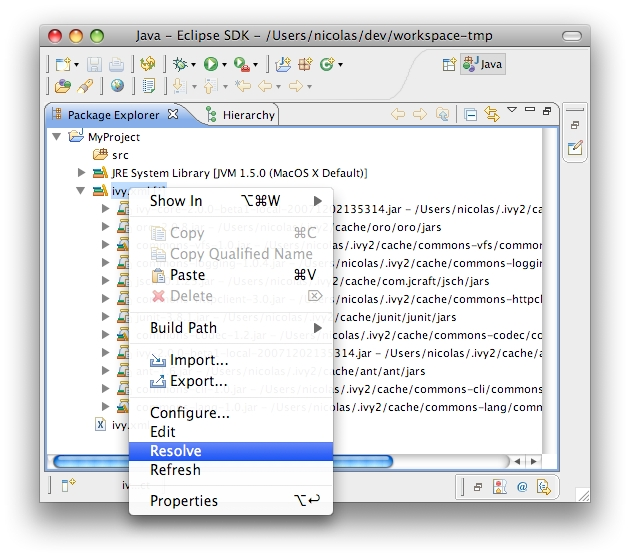

You can explicitly ask for a dependencies resolution from your class path container. This command will invoke the "resolve" ivy task and update your class path container. There is also a "refresh" action: this action is similar to the resolve one, it just doesn't do a full resolve if a report already exists in the cache. This is particularly useful if you work also with ant and a command line so you won't do two full resolve. <center></center><br/> You can also trigger a resolve (not a refresh!) of every IvyDE classpath container in the workspace via the button in the tool bar of Eclipse. <center><img src="../images/resolveall.jpg"></center><br/>